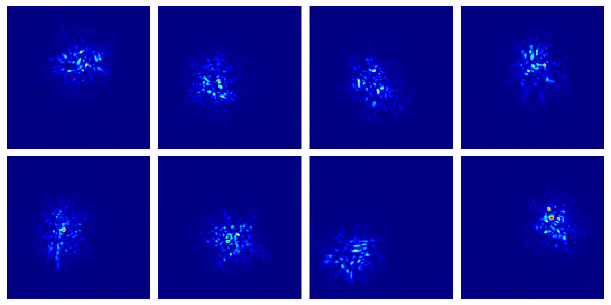

Overview
AtmosphericTurbulenceSimulator.jl simulates atmospheric turbulence effects in telescope imaging. It provides tools for sampling turbulent phase screens, propagating them through a pupil model, and generating image sequences for point sources, binary systems, and extended sky images.
Features include:
- High-fidelity phase screen sampling with Kolmogorov statistics.
- Flexible true-sky models: point sources, binary systems, user-defined images.
- Photon-counting readout with optional background.
- Non-monochromatic filters with wavelength-dependent turbulence and diffraction.
- Long-exposure simulations with wind-driven phase screen evolution.
- Unitful.jl support: physical quantities can be specified in fitting units (e.g.
0.2m,550nm,0.5s). - HDF5 output for large batches, or in-memory arrays for interactive work.
- CPU multi-threading and CUDA support.
Installation
The package is not registered yet. Install it from the Julia REPL with:
using Pkg
Pkg.add(url="https://github.com/aryavorskiy/AtmosphericTurbulenceSimulator.jl")Core Workflow
A simulation combines three pieces:
- A true-sky model, such as
PointSource,DoubleSystem, orTrueSkyImage. If none is provided, a point source is assumed. - An atmosphere model, such as
SingleLayer, which samples turbulent phase screens. - An imaging device specification,
ImagingSpec, which defines the aperture, detector grid, photon budget, exposure, and filter.
The main entry point is simulate_images, which takes these pieces and produces a sequence of images.
using AtmosphericTurbulenceSimulator, CairoMakie
aperture = CircularAperture((64, 64), 30)
img_spec = ImagingSpec(aperture, 2, PhotonCount(1e7, 200); filter=FilterSpec(550, bandwidth=40))
atm = SingleLayer(0.1; interpolate=:auto)
result = simulate_images(atm, img_spec; n=8)
clims = extrema(result.images)
fig = Figure(size=(1600, 800))
for (i, I) in enumerate(CartesianIndices((2, 4)))
ax = Axis(fig[I[1], I[2]]; aspect=DataAspect())
heatmap!(ax, result.images[:, :, i]; colormap=:jet, colorrange=clims)
hidedecorations!(ax)
end
fig
For larger simulations, specify the file keyword argument to write results directly to disk. See the Examples section for more info.
Atmosphere Model
The current atmosphere model is a single turbulent layer. Phase covariance follows Kolmogorov statistics:
\[D_\phi(r) = \big\langle (\phi(x) - \phi(x+r))^2 \big\rangle = 6.88 \left( \frac{r}{r_0} \right)^{5/3}.\]
The Fried parameter $r_0$ controls turbulence strength. Larger $r_0$ means weaker phase aberrations. Pass $r_0$ in the same physical units as the aperture diameter d (see below); these may be Unitful lengths (e.g. 0.2m) or plain numbers. In several cases you can also set the grid step directly, which is the physical size of one pixel of the wavefront and also uses the same units as $r_0$.
For large grids, SingleLayer can use Harding interpolation (Harding et al. 1999). The phase is sampled on a smaller grid and then upsampled in a way that preserves Kolmogorov statistics. interpolate=:auto selects a coarse grid size based on the default heuristic.
You can also replay phase screens from a dataset or an array using the SavedPhases atmosphere specification. Each atmosphere spec also accepts a base_wavelength keyword (default 550 nm; a Unitful length or a plain number assumed to be nm) that sets the reference wavelength for broadband simulations.
Imaging Model
The parameters of the imaging system are defined by an ImagingSpec object, which includes the following fields:
- The aperture function, which can be a predefined shape like
CircularApertureor a user-defined array. - The aperture diameter
d, in the same units as $r_0$ in the atmosphere model (Unitful length or plain number). - The photon budget, defined by a
PhotonCountobject that specifies the total number of photons and background level. - The filter specification, defined by a
FilterSpecthat sets the wavelengths and relative intensities for non-monochromatic simulations. - The exposure time, which can be used to simulate long exposures by averaging multiple phase screens together. See
Exposure.
The imaging pipeline converts each phase screen into a PSF, applies the selected true-sky model, and optionally applies photon shot noise. A non-monochromatic FilterSpec scales both turbulence strength and diffraction with wavelength — the wavelength scaling is computed relative to the base_wavelength of the atmosphere spec (default 550 nm). The aperture itself is assumed achromatic.
Long exposures are simulated by averaging multiple short-exposure frames with wind-shifted phase screens. Wind velocity is interpreted in the same length units as d and $r_0$ per unit time, and the exposure time in the matching time units (e.g. wind_velocity=(4m/s, 4m/s) with Exposure(0.5s, 10)). See this example for details.
The sampled-bandpass model is most appropriate for narrow bands where the telescope pupil does not vary significantly with wavelength.
Physical Units
The package integrates with Unitful.jl. Common length and time units (m, cm, mm, μm, nm, s, ms, μs, ns) and the @u_str string macro are re-exported, so you can attach units directly:
atm = SingleLayer(0.2m; base_wavelength=550nm, wind_velocity=(4m/s, 4m/s))
img_spec = ImagingSpec(CircularAperture((64, 64)), 2m, PhotonCount(1e7, 200);
filter=FilterSpec(550nm; bandwidth=40nm), exposure=Exposure(0.5s, 10))Units are only bookkeeping over the same dimensionless ratios the simulation already used ($r_0 / \text{grid\_step}$, $\lambda / \lambda_\text{base}$, $v\,t / \text{grid\_step}$), so a fully unit-annotated run yields the exact same numbers as the equivalent plain-number run. Values that share a physical dimension may be given in different units — e.g. $r_0$ in cm against an aperture in m; they are converted automatically. Inconsistent dimensions (say a length $r_0$ against a time grid_step) raise an error.
Interactive Viewer
The package provides speckle_viewer, an interactive window that samples a phase screen and shows the resulting speckle image side by side. Sliders control the atmosphere ($r_0$, wind speed) and imaging (wavelength, bandwidth, exposure) parameters, and buttons redraw the phase screen or remove its tip/tilt. All slider ranges accept Unitful quantities.
AtmosphericTurbulenceSimulator.speckle_viewer — Function
speckle_viewer(; kwargs...)Open an interactive Makie window showing a simulated phase screen and the speckle image it produces. Controls are split into two columns:
- Atmosphere: sliders for the Fried parameter $r_0$ and the wind speed (direction fixed horizontal), plus a New phase button that draws a fresh random phase screen.
- Imaging: sliders for the central wavelength, filter bandwidth and exposure time.
The phase screen is recomputed only when an atmosphere control changes (or the button is pressed); the speckle image is recomputed on any control change. A fixed circular aperture is used.
Keyword Arguments
wavelength_range: central-wavelength slider values (Unitful length; default nm).bw_range: filter-bandwidth slider values (Unitful length; default nm).exptime_range: exposure-time slider values (Unitful time; default s).r0_range: Fried-parameter slider values (Unitful length; default cm).wind_range: wind-speed slider values (Unitful velocity; default cm/s).d: aperture diameter (Unitful length; default2m).aperture: aperture array (defaults to 64×64 circular aperture).
This widget is powered by Makie. Import an interactive backend (GLMakie/WGLMakie) to use it:
using AtmosphericTurbulenceSimulator, GLMakie
speckle_viewer()Performance
Backends
This toolchain is compatible with CPU multi-threading. By default, it uses all available threads. To control the number of threads, set the JULIA_NUM_THREADS environment variable before starting Julia, or start Julia with the --threads flag:
julia --threads=auto # use all available coresUse ComputeBackend for more fine-grained control over the CPU threading behavior, such as specifying the number of threads or the array type used for computations:
simulate_images(atm, img_spec; n=100_000, file="simulation.h5", deviceadapter=ComputeBackend(nthreads=16))GPU execution is also supported. To use GPU arrays, pass the appropriate device adapter, for example deviceadapter=CuArray. Note that this requires CUDA.jl and a compatible NVIDIA GPU.
using CUDA
simulate_images(atm, img_spec; n=100_000, file="simulation.h5", deviceadapter=CuArray)Passing an array type directly is equivalent to wrapping it in ComputeBackend(CuArray), which defaults to using the array backend with one CPU thread.
CUDA.jl and Metal.jl are the only GPU backends tested so far. Other Julia GPU array backends may work if they provide the required array operations and FFT support.
Note that some of them may not support eigendecomposition on the device (pass device_eigen=false to the ComputeBackend constructor to run the eigendecomposition on the CPU instead) and require simplified photon counting (pass gaussian_approx=true to the PhotonCount constructor).
Batch Size
The batch keyword controls both compute batch size and HDF5 chunk size along the image sequence dimension:
simulate_images(PointSource(), atm, img_spec; n=10_000, batch=256, file="simulation.h5")The default batch size is 128. Increase it when enough memory is available, especially for many CPU threads or GPU execution. Decrease it if memory pressure is high.
Next Steps
- Work through Examples for phase-screen generation, imaging simulations, and HDF5 output.
- See API Reference for constructors and keyword arguments.